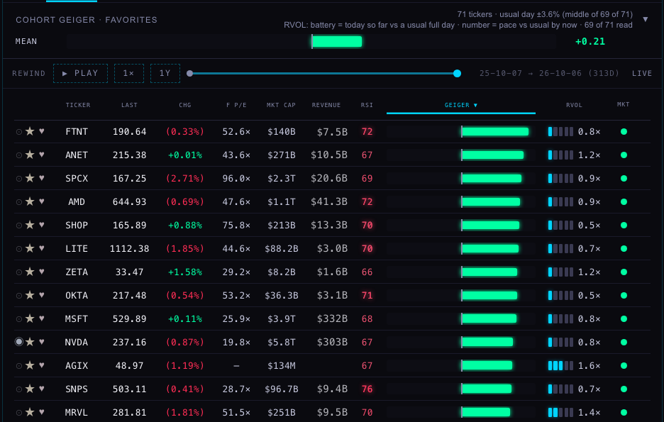
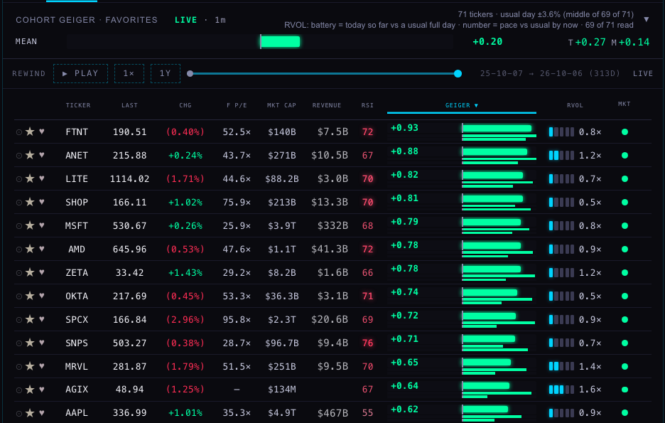
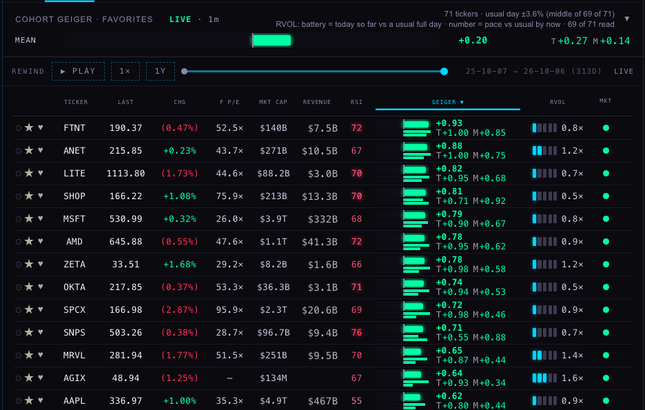
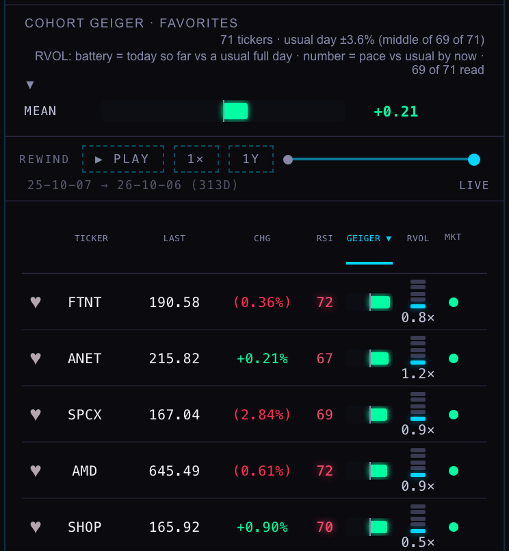
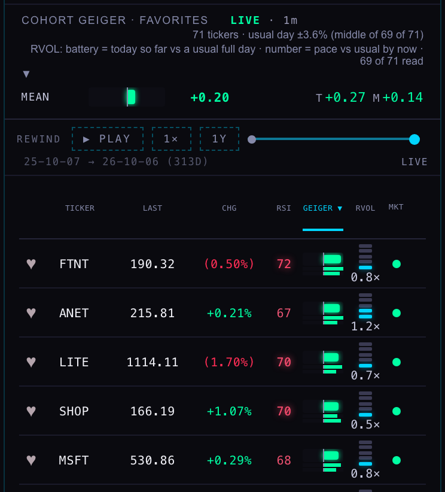
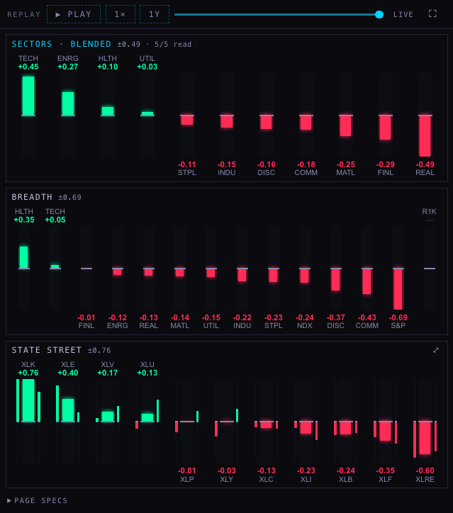
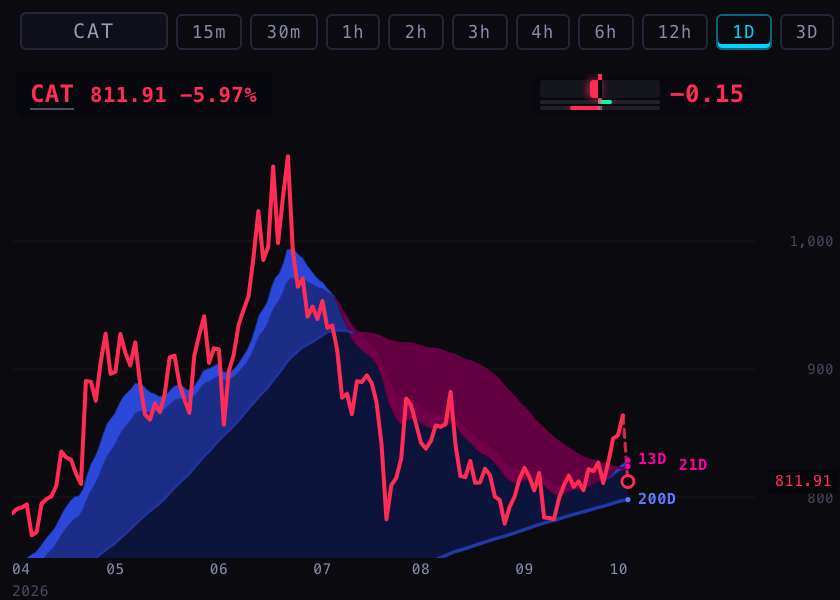
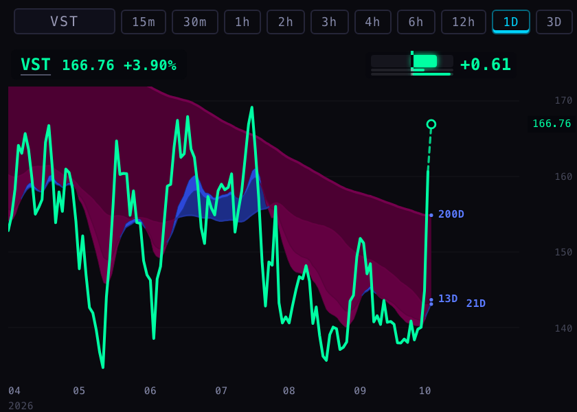

The Geiger goes live
GL1 · 7 October 2026 · nothing on this page is live yet: the back end waits for the coordinator's deploy, the new look waits for your word.
"We don't wait for candle closes." · "We keep minute prices, but the Geiger only changes when the bar finishes — is bullshit." · "We can't have inconsistencies." · "I would like to see [trend and momentum] separately."
You were right, and it is now fixed on a branch. The Hub's Geiger only counted bars that had finished, so its 3-hour part could not move for three hours and its 12-hour part for twelve. It now counts the bar each part is still building, at the newest price we have stored, and refreshes every minute.
The first number is what was on your board. The second is the new rule, rebuilt for that minute from our own bars and stored minute prices. The third is what your oscillator read on the daily chart. The new rule and the oscillator agree; the board was three hours behind.
1 · The board — before, and with trend and momentum shown apart
Two forms to choose from. Both keep every row exactly as tall as it is today, and both put LIVE · 1m beside the cohort name: which reading the board is showing and how old its oldest price is. The MEAN line gains the mean trend and the mean momentum.





These pictures are the real Hub page from this branch with the switch on. The numbers in the "after" pictures are today's live readings, computed at 14:07 by the new publisher code from real bars and stored minutes for all 71 names on FAVORITES and RADAR plus SPY and QQQ, and laid over the board's own feed, because the deployed back end still serves the old reading. With the switch off the branch draws the board exactly as it is today (picture kept in the folder).
2 · The compare cards
Each fund's or group's bar gets two thin bars beside it: trend on the left, momentum on the right, on the card's own scale. BREADTH has none (its bar is the gap between two funds, which has no trend or momentum of its own), and neither has SECTORS · BLENDED (an average of five readings).

3 · The Station chip
Alone on the wall the chip reads the three numbers; in an eight-chart layout it keeps the Geiger's number and shows trend and momentum as the two thin bars. Caterpillar this afternoon is the case for seeing them apart: trend still up, momentum sharply down.


4 · What the board was missing at 14:07 today
Your 71 names, both readings at the same minute. The middle name differed by 0.05 Geiger points; 17 names by 0.10 or more. The twelve that moved most:
| name | finished bars only (the Hub today) | live (the new rule) | difference |
|---|---|---|---|
| NVTS | −0.28 T −0.14 M −0.42 | −0.51 T −0.42 M −0.60 | −0.23 |
| CEG | +0.29 T +0.11 M +0.47 | +0.52 T +0.35 M +0.68 | +0.22 |
| CAT | +0.06 T +0.33 M −0.20 | −0.15 T +0.20 M −0.51 | −0.22 |
| AAPL | +0.40 T +0.64 M +0.17 | +0.62 T +0.80 M +0.44 | +0.22 |
| KO | −0.09 T −0.06 M −0.12 | −0.30 T −0.32 M −0.28 | −0.21 |
| NU | +0.38 T +0.18 M +0.59 | +0.57 T +0.35 M +0.79 | +0.19 |
| MU | +0.39 T +0.48 M +0.30 | +0.57 T +0.63 M +0.51 | +0.18 |
| VST | +0.45 T +0.17 M +0.73 | +0.61 T +0.31 M +0.92 | +0.16 |
| COHR | +0.38 T +0.52 M +0.24 | +0.53 T +0.55 M +0.52 | +0.16 |
| SNDK | +0.06 T +0.12 M +0.00 | +0.20 T +0.22 M +0.19 | +0.14 |
| MSTR | +0.20 T +0.41 M −0.01 | +0.06 T +0.35 M −0.22 | −0.14 |
| AMZN | +0.35 T +0.19 M +0.50 | +0.48 T +0.33 M +0.63 | +0.13 |
5 · Does it match the oscillator? Twenty names, three moments today
11:22 ET: 20 of 20 equal · 12:30 ET: 20 of 20 equal · 13:50 ET: 20 of 20 equal — to two decimals on Geiger, trend and momentum; in fact to four. "Our publisher" is the new production code fed the provider's finished bars and our stored minutes. "The oscillator's formula" is the TradingView script's own arithmetic, written out and run on 30-minute and daily bars the way TradingView builds them.
| name | 11:22 ET | 12:30 ET | 13:50 ET | |||
|---|---|---|---|---|---|---|
| our publisher | the oscillator's formula | our publisher | the oscillator's formula | our publisher | the oscillator's formula | |
| MU | +0.40 T +0.48 M +0.33 | +0.40 T +0.48 M +0.33 | +0.51 T +0.63 M +0.39 | +0.51 T +0.63 M +0.39 | +0.56 T +0.63 M +0.49 | +0.56 T +0.63 M +0.49 |
| NVDA | +0.67 T +0.98 M +0.37 | +0.67 T +0.98 M +0.37 | +0.59 T +0.90 M +0.28 | +0.59 T +0.90 M +0.28 | +0.59 T +0.90 M +0.28 | +0.59 T +0.90 M +0.28 |
| AVGO | +0.38 T +0.26 M +0.49 | +0.38 T +0.26 M +0.49 | +0.37 T +0.26 M +0.48 | +0.37 T +0.26 M +0.48 | +0.36 T +0.26 M +0.46 | +0.36 T +0.26 M +0.46 |
| GOOGL | +0.11 T +0.23 M −0.01 | +0.11 T +0.23 M −0.01 | +0.13 T +0.23 M +0.04 | +0.13 T +0.23 M +0.04 | +0.27 T +0.28 M +0.26 | +0.27 T +0.28 M +0.26 |
| AMZN | +0.36 T +0.23 M +0.48 | +0.36 T +0.23 M +0.48 | +0.48 T +0.33 M +0.63 | +0.48 T +0.33 M +0.63 | +0.48 T +0.33 M +0.62 | +0.48 T +0.33 M +0.62 |
| TSM | +0.58 T +0.83 M +0.33 | +0.58 T +0.83 M +0.33 | +0.60 T +0.88 M +0.31 | +0.60 T +0.88 M +0.31 | +0.61 T +0.88 M +0.34 | +0.61 T +0.88 M +0.34 |
| AMD | +0.77 T +0.95 M +0.58 | +0.77 T +0.95 M +0.58 | +0.74 T +0.93 M +0.54 | +0.74 T +0.93 M +0.54 | +0.78 T +0.95 M +0.60 | +0.78 T +0.95 M +0.60 |
| MSFT | +0.70 T +0.90 M +0.51 | +0.70 T +0.90 M +0.51 | +0.73 T +0.90 M +0.57 | +0.73 T +0.90 M +0.57 | +0.78 T +0.90 M +0.67 | +0.78 T +0.90 M +0.67 |
| AAPL | +0.50 T +0.73 M +0.26 | +0.50 T +0.73 M +0.26 | +0.50 T +0.75 M +0.24 | +0.50 T +0.75 M +0.24 | +0.61 T +0.80 M +0.43 | +0.61 T +0.80 M +0.43 |
| SPY | +0.60 T +0.88 M +0.31 | +0.60 T +0.88 M +0.31 | +0.69 T +0.90 M +0.47 | +0.69 T +0.90 M +0.47 | +0.72 T +0.92 M +0.53 | +0.72 T +0.92 M +0.53 |
| QQQ | +0.71 T +0.93 M +0.49 | +0.71 T +0.93 M +0.49 | +0.75 T +0.93 M +0.56 | +0.75 T +0.93 M +0.56 | +0.77 T +0.93 M +0.61 | +0.77 T +0.93 M +0.61 |
| SNDK | +0.08 T +0.12 M +0.05 | +0.08 T +0.12 M +0.05 | +0.18 T +0.22 M +0.14 | +0.18 T +0.22 M +0.14 | +0.19 T +0.22 M +0.16 | +0.19 T +0.22 M +0.16 |
| WDC | −0.64 T −0.63 M −0.64 | −0.64 T −0.63 M −0.64 | −0.68 T −0.70 M −0.66 | −0.68 T −0.70 M −0.66 | −0.67 T −0.70 M −0.65 | −0.67 T −0.70 M −0.65 |
| ORCL | −0.03 T −0.13 M +0.06 | −0.03 T −0.13 M +0.06 | +0.02 T −0.08 M +0.11 | +0.02 T −0.08 M +0.11 | +0.06 T −0.06 M +0.18 | +0.06 T −0.06 M +0.18 |
| VST | +0.60 T +0.31 M +0.88 | +0.60 T +0.31 M +0.88 | +0.61 T +0.31 M +0.90 | +0.61 T +0.31 M +0.90 | +0.61 T +0.31 M +0.91 | +0.61 T +0.31 M +0.91 |
| NBIS | +0.32 T +0.76 M −0.13 | +0.32 T +0.76 M −0.13 | +0.26 T +0.70 M −0.18 | +0.26 T +0.70 M −0.18 | +0.28 T +0.70 M −0.14 | +0.28 T +0.70 M −0.14 |
| DLR | +0.03 T −0.15 M +0.21 | +0.03 T −0.15 M +0.21 | +0.11 T −0.07 M +0.30 | +0.11 T −0.07 M +0.30 | +0.10 T −0.07 M +0.26 | +0.10 T −0.07 M +0.26 |
| EQIX | +0.12 T +0.13 M +0.12 | +0.12 T +0.13 M +0.12 | +0.19 T +0.16 M +0.21 | +0.19 T +0.16 M +0.21 | +0.19 T +0.16 M +0.22 | +0.19 T +0.16 M +0.22 |
| NET | +0.33 T +0.76 M −0.10 | +0.33 T +0.76 M −0.10 | +0.29 T +0.65 M −0.06 | +0.29 T +0.65 M −0.06 | +0.31 T +0.65 M −0.04 | +0.31 T +0.65 M −0.04 |
| OKTA | +0.77 T +0.96 M +0.58 | +0.77 T +0.96 M +0.58 | +0.74 T +0.94 M +0.55 | +0.74 T +0.94 M +0.55 | +0.74 T +0.94 M +0.55 | +0.74 T +0.94 M +0.55 |
One difference found, and it is in the oscillator, not the Hub. The script on your charts holds its 3-day and weekly parts until the last trading day inside each bar. The new rule counts them as they build, as you asked. Until the script's small change (version 4, in this folder, not installed) is saved, the Hub and the oscillator can differ on those two parts: about 0.01 on most names, up to 0.13 on the Geiger itself and 0.16 on momentum today (Vistra). After it, they are the same number. The coordinator can also hold the Hub to the oscillator's rule for a day with one setting.
What this check is not: a comparison of TradingView's price feed with ours, name by name. Both sides here read our provider. The one true TradingView reading on file is Micron at 11:22, above: Geiger and trend equal, momentum 0.33 against 0.32.
6 · The log — "to watch how it would have looked before"
- A new table keeps, for every name, what the board showed: Geiger, trend, momentum, the same three from finished bars only, and each part's own trend and momentum.
- Every minute for FAVORITES, RADAR, SPY and QQQ; every five minutes for every other name. Put a name on FAVORITES and its minute rows start the next minute.
- Measured: 167,808 rows a trading day, 21.3 MB. Kept: minute rows 60 days, five-minute rows 400 days, the evening reading for good. That levels off near 4.2 GB.
- It starts the evening it is switched on. It cannot be filled backwards minute by minute; the daily history from GH1 covers the past.
7 · What could be wrong
- "Live" means the newest stored minute: one to two minutes behind the tape, longer for a name that has not traded. The age is on the screen.
- Before 09:30 the daily, 3-day and weekly parts do not count pre-market prices (a daily bar never does, here or on TradingView); the four intraday parts do.
- On your four-hour chart the oscillator itself shows finished bars only, except in the last half hour of each bar; only its daily chart counts the bars being built. That is how the script was written; it is noted for whoever changes it next.
- The pictures show today's real readings on the real page, but through a stand-in for the back end's new fields. The first true end-to-end picture is the one after the deploy.
- Said plainly: the new rule reads the database every cycle, and my first version had a way for a stalled database to stop the cycles after it — a frozen board, the very thing you banned. I found it re-reading my own work, closed it, and proved it closed on the real publisher with a database that never answers. It is written up in the runbook.
8 · What was not done
- Nothing deployed, no table created, no machine changed. The proof ran on a throw-away machine that wrote nothing and was destroyed.
- The oscillator's version 4 was not installed and not compiled on TradingView.
- The minute-by-minute refresh was proved in parts (its arithmetic, its guards, one refused dry run on the real machine), not yet as a whole against the live object: that needs the deploy.
Decisions for you
- The board's form. A: the Geiger keeps its full bar, with its number, and trend and momentum are two thin bars under it. B: all three numbers in view beside shorter bars. Recommend A: the Geiger stays the thing that draws the eye, and the numbers are one hover away.
- The 3-day and weekly parts. Count them as they build on both the Hub and the oscillator (its version 4), or keep the oscillator as it is and hold the Hub to it. Recommend: count them, both places, same evening.
- Switch the new look on for the Hub board, the compare cards and the Station chip once the back end is live. Recommend yes, after you have looked at these pictures.
PAGE SPECS
Branches: provider provider/gl1-geiger-live-20261007 (the rule, the minute refresh, the log, the runbook with the deploy order) · Hub hub/gl1-geiger-live-20261007 · Station station/gl1-geiger-live-20261007. Where the bar being built comes from: the minute bars the price stream already stores, one query a cycle for every name; the live price service is not asked anything. The reading from finished bars only is still computed and stored for history. Pictures: headless, one page at a time, every request that is not a read stopped (none was made). Data behind every table on this page is in data/; the builder is tools/build-page.py.